7210A60 R.R. FRONT PILLAR
- Path
- Procedures > 72 PANELS AND FRAMES > 7210 REMOVING-REFITTING > 7210A STRUCTURAL ELEMENTS (FRONT PART) > 7210A60 R.R. FRONT PILLAR
- Kind
- repair procedure (removal / refitting; the operation number is the code)
- Applies to
- all engines; all production periods
- Interactive page
- https://sloeber94.github.io/elrnDB-fCrm/en/#/194001221
Applies to: all engines; all production periods
 Removing
Removing
 Refitting
RefittingOp. 7210A56 R R BODY SIDE OUTER FRONT STIFFENER, (ONE) LH OR RH
- Check that the components connected are not distorted by checking the bodyshell alignment measurements using suitable equipment (gauges, templates or jigs).
- Straighten the body as necessary.
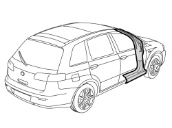
Applies to: all engines; all production periods
- Remove the front door, hinges and bonnet.
1. Use a hot air blower and wire brush to remove the sealant from the underdoor trim.
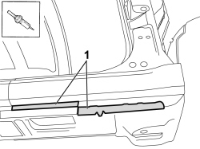
Applies to: all engines; all production periods
- Use the rotary brush to clean the other edges of the panel to highlight the welds.
1. Use the chamfering machine to remove the spot welds shown in the diagram.
- Use the drill and chamfer the spot welds not accessible with the chamfering machine.
2. Use the circular saw following the dotted cutting lines in the diagram.
3. Remove the panel offcuts.
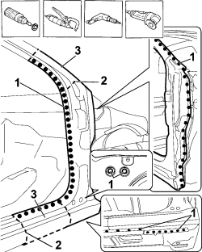
Applies to: all engines; all production periods
1. Use a disc grinder to completely remove the two nuts shown in the diagram which secure the inner reinforcement for the pillar to the windscreen strut (for production assembly requirements only).
2. Use the chamfering machine and remove the spot welds shown in the diagram that secure the inner reinforcement for the pillar to the underdoor side memeber frame.
- Use the drill and chamfer the spot welds not accessible with the chamfering machine.
3. Open the underdoor clip.
4. Remove the pillar complete with inner reinforcement.
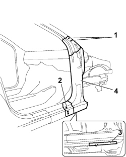
Applies to: all engines; all production periods
- Straighten the edges of the bodyshell using a hammer and dolly block.
- Remove the spot weld residues using a disc grinder.
- Use a rotary brush to clean the areas treated previously.
1. Remove the expanded foam from inside the box section for the windscreen strut.
2. Apply electro-galvanizing paint.
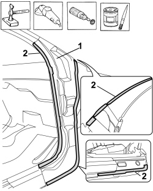
Applies to: all engines; all production periods
1. Working at the bench, drill holes in the replacement pillar reinforcement as illustrated in the diagram.
2. Use the disc grinder to completely remove the two nuts shown in the diagram.
- Remove the anti-corrosion treatment from the entire perimeter of the reinforcement for the replacement pillar using the rotary brush.
3. Apply electro-weldable paint to the edges treated previously.
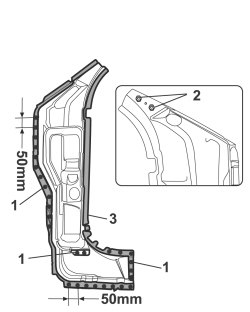
Applies to: all engines; all production periods
- Work at the bench and cut the front pillar from the replacement part making sure that a section of the panel remains for overlapping.
1. Drill holes in the cut pillar at the points shown in the diagram.
2. Fit threaded rivets in the openings made in the replacement part.
- Remove the anti-corrosion treatment from the entire perimeter of the inner and outer parts of the replacement part using the rotary brush.
3. Apply electro-weldable paint to the edges treated previously.
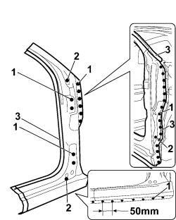
Applies to: all engines; all production periods
Refitting
Removing1. Position the reinforcement for the front pillar correctly on the vehicle and secure it using self-locking clamps and then Parker bolts.
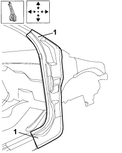
Applies to: all engines; all production periods
1. Position the front pillar, using the bolts securing the front door hinges as a centering reference and the secure it using self-locking clamps and later using Parker bolts.
2. Position the outer side panel front reinforcement then secure it using self-locking clamps and later using Parker bolts.
- Remove the bolts used for centering the pillar.
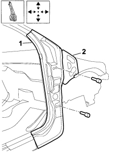
Applies to: all engines; all production periods
1. Fit the front door hinges and seal.
2. Fit the bonnet.
3. Fit the front wing provisionally.
- Using the gauge check the diagonals of the windscreen housing and the alignment of the components.
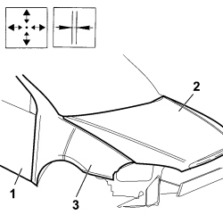
Applies to: all engines; all production periods
- Remove the front door with the seal and the hinges.
- Remove the bonnet and the front wing.
1. Use the circular saw to cut the two edges of the panel overlapping the replacement front pillar so that the join line is perfect.
2. Remove the excess panels.
3. Remove the outer side panel front reinforcement.
4. Remove the front pillar.
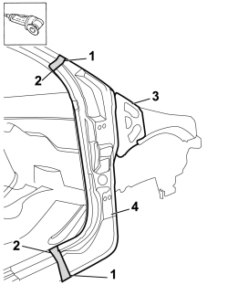
Applies to: all engines; all production periods
1. Close the underdoor clip.
2. Use a spot welder in the areas shown in the diagram.
3. Use the MIG welder to fill weld at the points shown in the diagram.
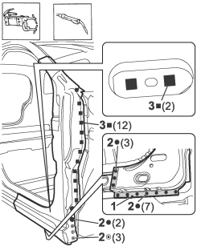
Applies to: all engines; all production periods
- Position the front pillar on the vehicle and secure it.
- Use the MIG welder and tack the two join areas with a few spot welds.
1. Use a spot welder in the areas shown in the diagram.
2. Use the MIG welder to fill weld at the points shown in the diagram.
3. Use the MIG welder for seam welding at the pillar join points.
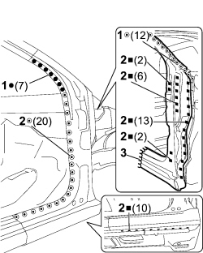
Applies to: all engines; all production periods
- Correct any distortions to the panel using a hammer and dolly block.
- Use a disc grinder to level and remove the welding.
- Use a rotary brush to clean the areas welded previously.
1. Apply anti-oxidant protection to the areas involved in the welding.
- Seal the join lines between the replacement part and the vehicle.
- Apply underbody protection.
- Proceed with the painting stage.
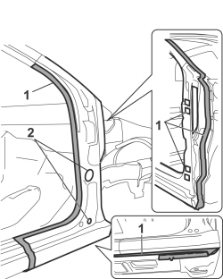
Applies to: all engines; all production periods
1. Apply wax-based protection to the inside of the pillar.
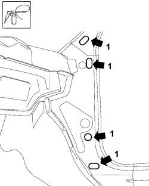
Applies to: all engines; all production periods
Op. 7210A56 R R BODY SIDE OUTER FRONT STIFFENER, (ONE) LH OR RH